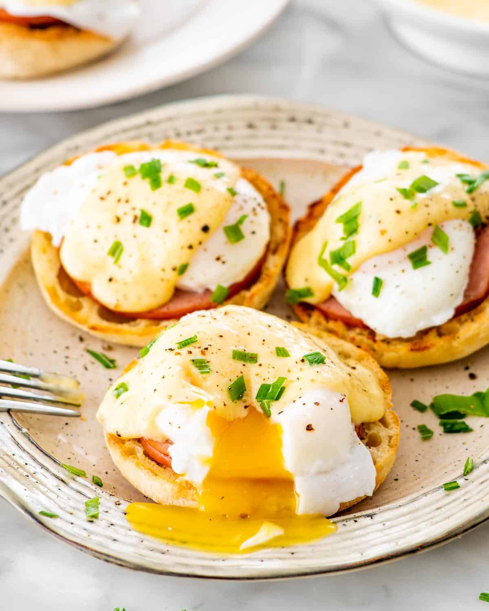
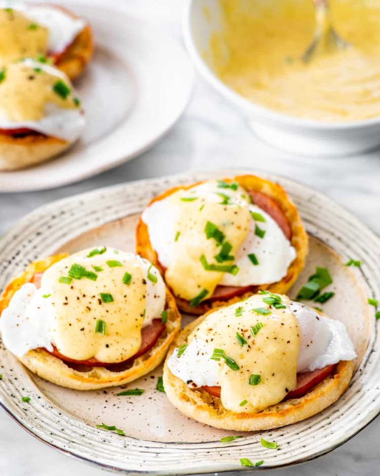

American Eggs Benedict Recipe


⌛ 25 Minutes
Source = Catz In The Kitchen
Description
Eggs Benedict is a common, American breakfast or brunch dish, and legend has it that a hungover Wall Street broker introduced them to the world. In the Waldorf Hotel in New York, in 1894, a guy called Lemuel Benedict ordered two poached eggs on top of buttered toast, crispy bacon and another two poached eggs, all topped off with a healthy dose of hollandaise sauce, and the Head Chef, Oscar Tschirky, thought it was excellent! So much so, he tweaked the recipe slighlty, replacing the buttered toast with English muffins and the crispy bacon with Canadian bacon, and added it to the menu, creating a trully epic dish. In modern times, there is an annual celebration on April 16 called National Eggs Benedict Day, but why wait? Follow the recipe and enjoy them now!
Ingredients
- 3 sliced English muffins
- 6 eggs
- 3 egg yolks
- 6 slices Canadian bacon
- 1/2 tsp Dijon mustard
- 1 tbsp lemon juice
- 1 stick unsalted butter
- Dash of hot sauce
- Pinch of smoked paprika
Steps
- Fill up a large pot with water and bring it to a boil.
- Crack the eggs into boiling water, poaching for approximately 2 minutes, until the yolks are light yellow and the white of the egg has cooked around the yolk. Once this happens, remove the poached eggs and place them on a plate. Allow the water to continue boiling.
- Melt the butter in a small saucepan.
- Blend your egg yolks, lemon juice, Dijon mustard, and hot sauce for a few seconds in a blender, then, while the blender is still running, slowly pour in the very hot melted butter, though make sure to be very careful. Continue to run the blender for a few more moments until the sauce becomes thick.
- Spread a small amount of butter on the English muffin halves, then broil the English muffins and Canadian bacon for one or two minutes on high, or just until the edges of the muffins begin to brown. Remove them from the oven, and place the English muffins on the plates. Be sure to place the Canadian bacon on top.
- Place the poached eggs back into boiling water for roughly 10 seconds, then remove them with a slotted spoon, allowing excess water to drain back into the pan. Place one poached egg onto each of the English muffins.
- Top your eggs with hollandaise sauce, then sprinkle them very lightly with paprika, and serve immediately. Enjoy!